庭園
garden
庭園散策マップ
garden map

四季折々の表情を見せる広大な日本庭園。
温泉神社や湯畑、展望台、ラウンジなどを巡りながら、
ゆったりとした散策をお楽しみください。

雅廊館
庭園の中心に佇む文化施設。 展示や映像、ラウンジなど、 様々な楽しみ方をご用意しております。

ギャラリー
地域文化や自然をテーマにした 展示を開催しております。
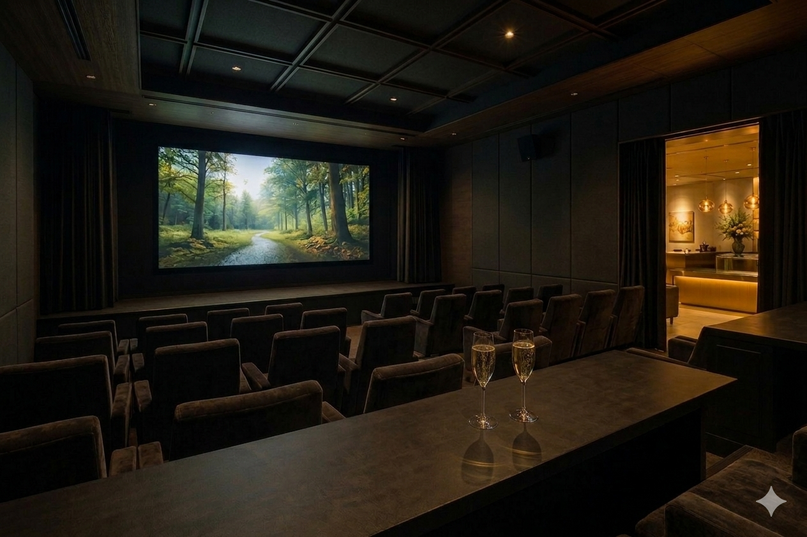
ミニシアター
季節の風景や地域の魅力を紹介する 映像作品をご覧いただけます。

金のラウンジ
黄金をテーマにした特別ラウンジ。 景色を眺めながらゆったりとお寛ぎください。

湯畑
自家源泉から湧き出る温泉を利用した湯畑。 湯けむり立ち昇る幻想的な景観を お楽しみいただけます。

温泉神社
温泉の恵みに感謝を捧げる神社。 木々に囲まれた静かな空間で 心穏やかなひとときをお過ごしください。
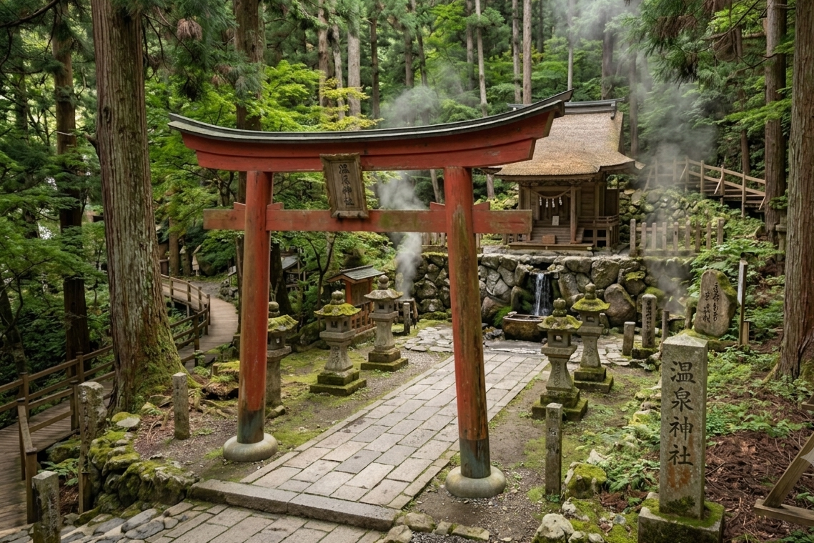
摂社
土地神の竜神様を祀っている摂社。
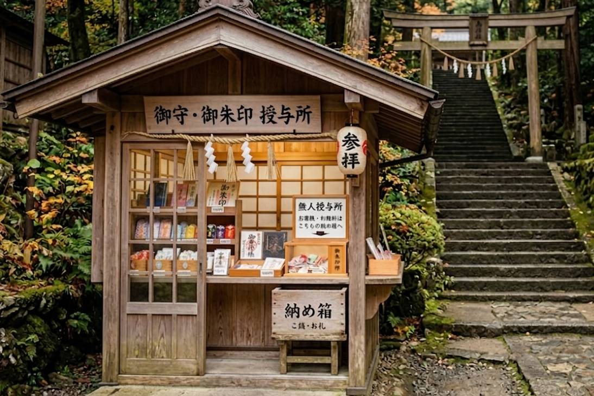
授与所
お守りや御朱印が購入できる無人の授与所。

展望台
庭園を一望できる高台の展望スポット。 昼は山々の景色、 夜は満天の星空をお楽しみいただけます。
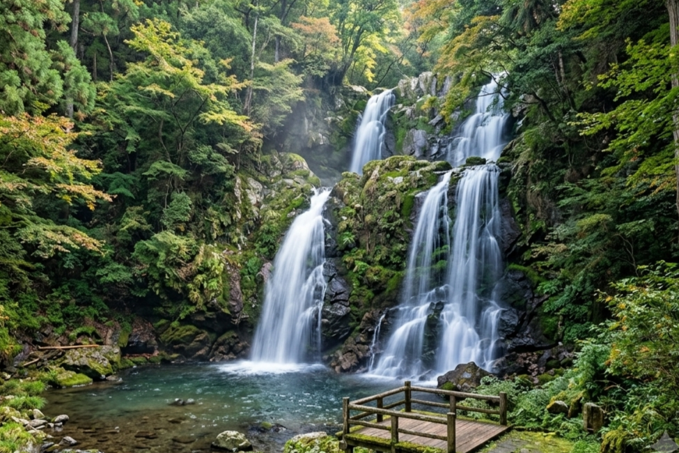
氷川大滝
落差５０メートルの大きな滝。 夏は涼しく、冬には氷瀑が楽しめます。

大宮大桜
樹齢400年を超える、大きな山桜の御神木。 4月上旬ごろ、満開の花を咲かせます。

休憩処
庭園内にある、秘密基地のような休憩所。 歩き疲れたり、貸し切り風呂の待合いなどにお使いください。

木陰休憩処
ツリーハウス型の眺めのいい休憩処。
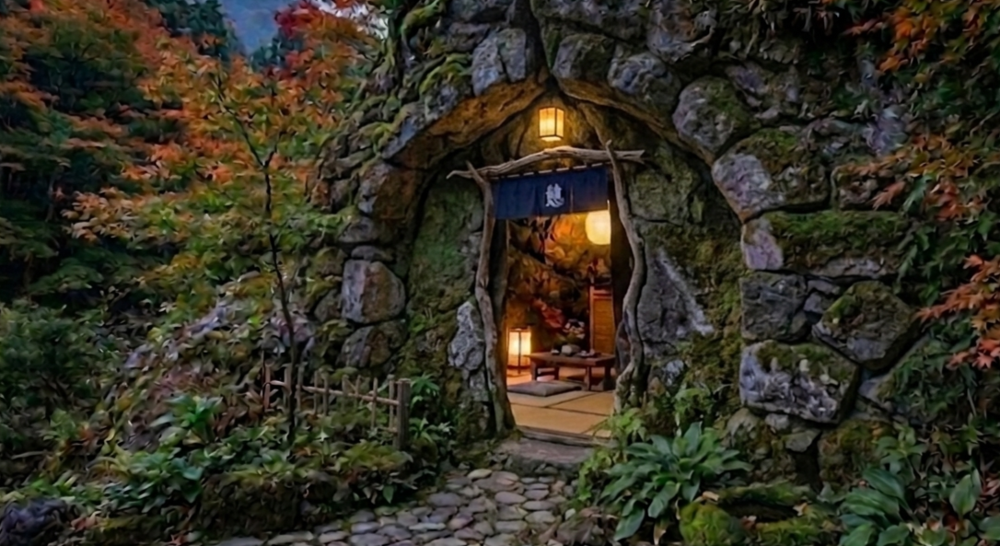
岩陰休憩処
洞窟型の落ち着く空間の休憩処。
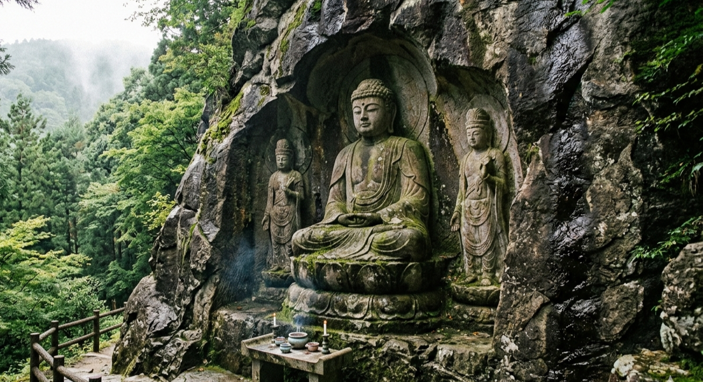
岩窟像
大岩に掘られた石像。 300年以上前に掘られた、貴重な遺跡です。

水のラウンジ
川のせせらぎを聞きながら寛げるラウンジ。 温泉で火照った体の湯冷ましに。
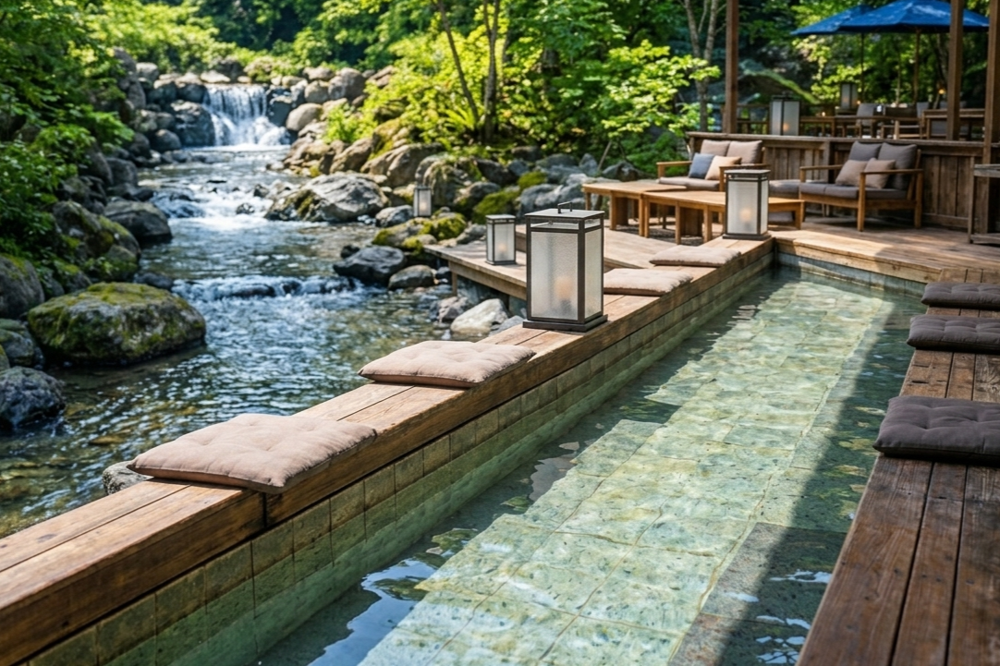
足湯
川を見ながら入れる、天然温泉の足湯。

蛍鑑賞
8月頃には、川沿いで蛍を見られます。

木のラウンジ
森林浴をしながら寛げるラウンジ。 自然を肌で感じ、ゆったりとした時間をお過ごしください。

プロジェクションマッピング
毎晩プロジェクションマッピングをおこなっております。（雨天中止）
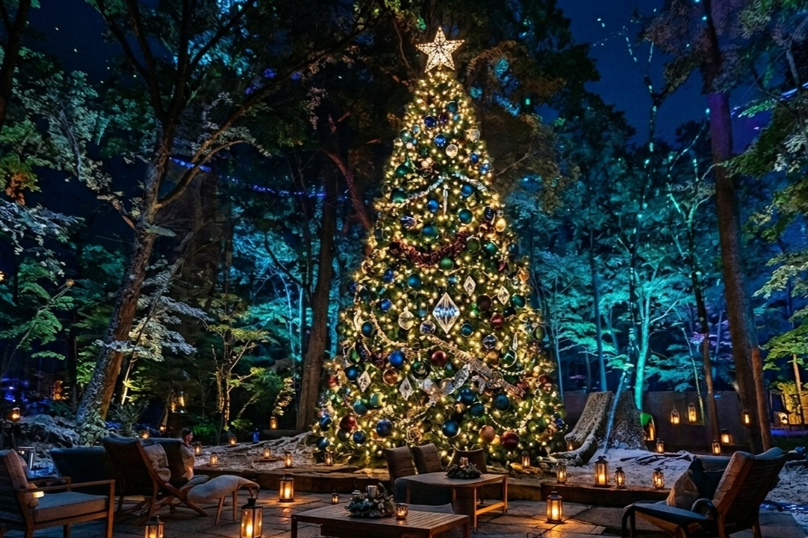
イルミネーション
秋～冬にかけて、森でイルミネーションをおこなっております。

貸切風呂
庭園内に点在している、貸し切り露天風呂。 それぞれ趣向の違った、個性豊かな温泉を心ゆくまでご堪能ください。

紅殻の湯
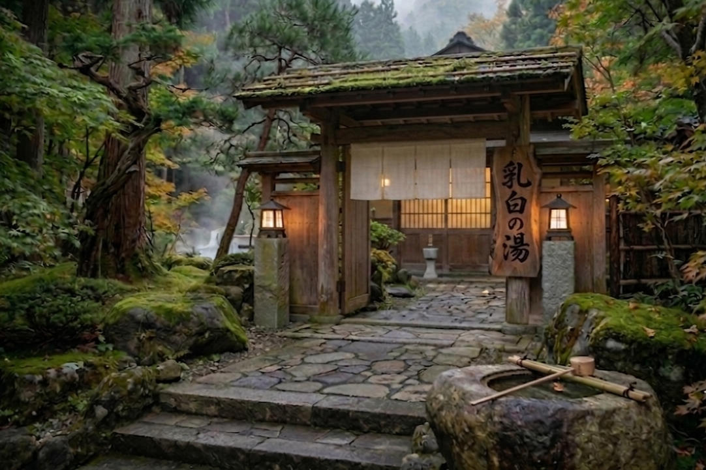
乳白の湯
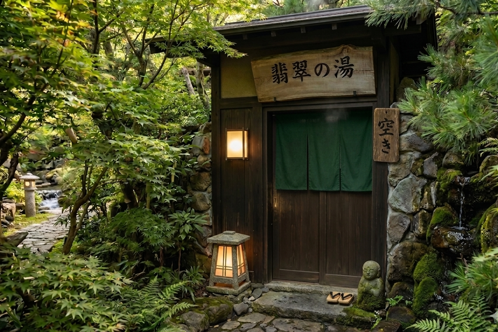
翡翠の湯
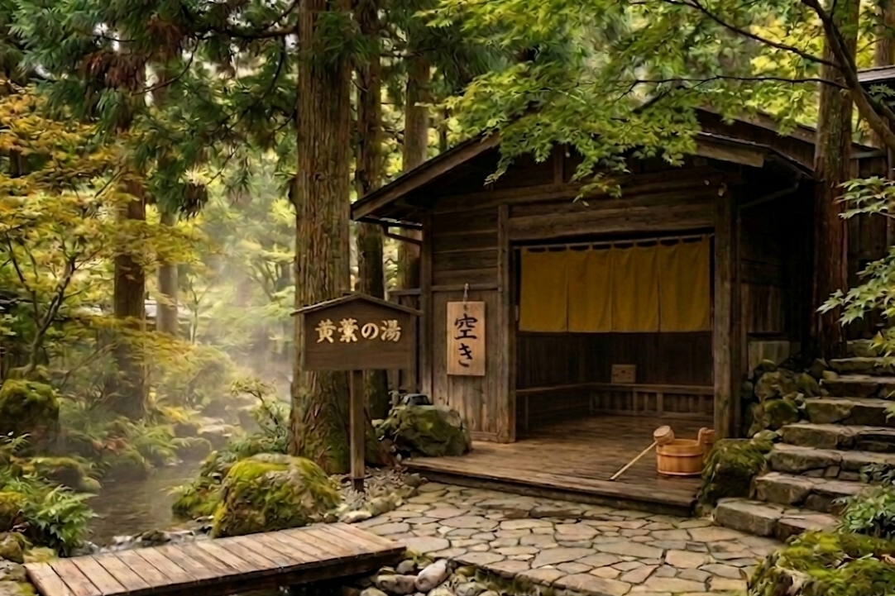
黄檗の湯

朽葉の湯
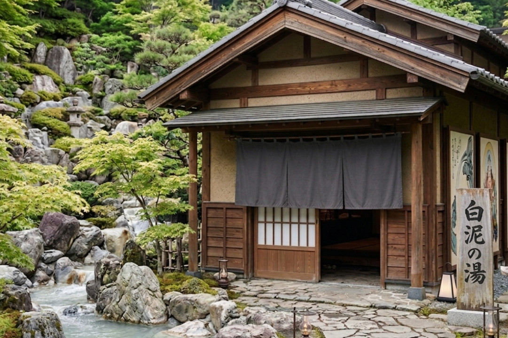
白泥の湯